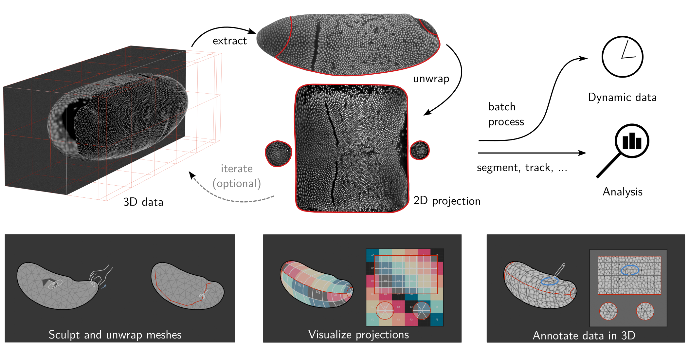
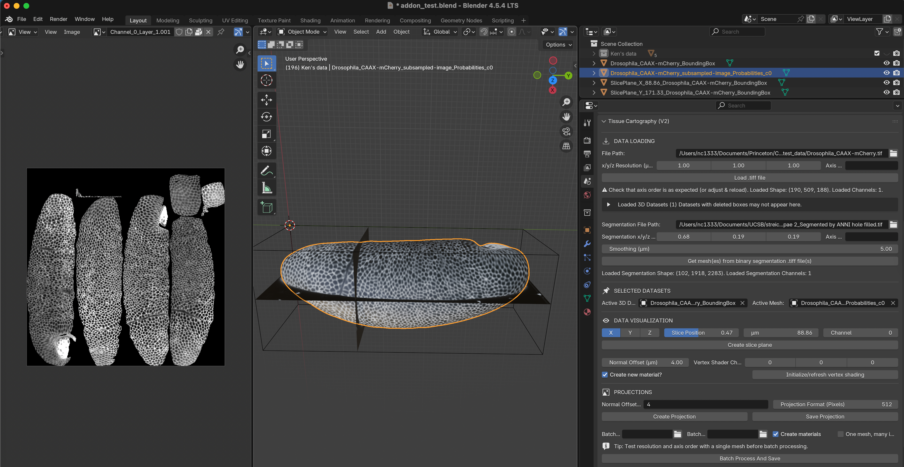

blender-tissue-cartography

Tissue cartography extracts and cartographically projects curved surfaces from volumetric image data. This turns your 3D data into 2D data, which is much easier to visualize, analyze, and computationally process.
Click here for a 2-minute video demo
Tissue cartography takes advantage of the fact that many biological systems are organized as thin, curved sheets (for example, epithelia). For more info, see our methods paper and Heemskerk & Streichan 2015.
This repository contains two tissue-cartography tools:
An add-on for the 3d creation software Blender to do tissue cartography 100% in an interactive, graphical user interface (Version 2 now available). Use the add-on to quickly process a new dataset, or if you are not a coding expert.
- A companion add-on exposes mesh-improvement filters from MeshLab in Blender, useful for cleaning up meshes obtained from 3D image segmentations.
A Python library for custom and automatized analysis pipelines. The library is available on pip, and as source in this GitHub directory.
Blender has powerful tools for mesh editing, cartographic mapping, and 3D visualization. You can learn to use Blender from one of many tutorials or the manual.
With blender tissue cartography, you can process surfaces with complex and deforming shapes, where tools like localzprojector break down.
For what can I use tissue cartography?
The simplest example is replacing Z-projections on Z-stacks from a confocal microscope. Even in a mildly curved tissue, tissue cartography yields much better results since it follows the curved surface. Here are some more use cases:
Installation
System requirements
Processing volumetric image data requires sufficient RAM (at least ~4x of the size of the image). Blender will run much faster if your computer has a GPU.
Blender add-on
Install Blender 4.5 (pre-4.2 version will not work)
Download the add-on
.zipfrom GitHub. Choose the file that matches your operating system, likeblender_tissue_cartography-2.0.0-windows_x64.zip.- If your OS is unavailable, download the add-on source code, and install the python library
scikit-imagein Blender’s Python interface.
- If your OS is unavailable, download the add-on source code, and install the python library
Install the add-on: Click “Edit -> Preferences -> Add-ons -> Add-on Settings -> Install from disk” and select the
.zipfile you just downloaded.Restart Blender. The add-on is under “Scene -> Tissue Cartography”.
Optional: Install the MeshLab add-on (for improving meshes obtained from 3D image data). Download the matching
pymeshlab_remesh-*.zipfor your OS from GitHub and install it the same way as the main add-on. The panel appears under “Scene -> PyMeshLab Remeshing”.
Python library
Optional: Install Blender
Install
blender-tissue-cartographyfrom pip: runpip install blender-tissue-cartographyin a command window.(Optional) Install the Python library for
pymeshlabfor advanced (re)meshing functionality. Runpip install pymeshlabin a command window
Developer instructions
To extend the Blender add-on:
Download the add-on source code.
Read the add-on developer readme.
To extend the Python library:
Clone the GitHub repository.
Create a
condaenvironment and install theblender_tissue_cartographymodule:conda env create -n blender_tissue_cartography -f environment.ymlconda activate blender_tissue_cartographypip install -e .
Install nbdev. The Python library is developed in Jupyter notebooks that are exported to Python modules and the documentation webpage.
Basic Usage
Tissue cartography workflow
The workflow starts with a 3D, volumetric image, and a 3D segmentation of the object you want to extract. This repo does not contain any image segmentation tools as excellent software is already available (e.g. Ilastik)
Meshing Convert the 3D segmentation into a surface
UV mapping Cartographically unwrap the surface into a 2D plane
Projection of your 3D iamge data to 2D
Analysis and visualization of the results in 2D or 3D, and use the 2D projections for quantitative analysis
Batch processing: of multiple 3D images, like frames of a movie
Each workflow step can also be carried out with any external tool - just import the required file into Blender/python.
Dynamic datasets
In movies, the surface of interest can move or deform over time. Aligning recordings of multiple samples leads to a similar problem. The add-on and library also provide tools for this more complex use case. You create a cartographic projection for a reference time point which is aligned to all other time points. This generates consistent projections across multiple frames or samples.
Blender add-on
The add-on can carry out steps 1-5 entirely within Blender, so you can edit meshes and cartographic projections interactively. Here is a screenshot using the example Drosophila blastoderm dataset:

Left: Projected 2D image. Center: 3D view of image data (volume bounding box, image slices, and extracted surface). Right: Tissue Cartography add-on panel.
blender_tissue_cartography Python library
With the Python library, you can build automated and custom tissue cartography pipelines. The library also has tools for quantitative image analysis on projections (to mathematically account for cartographic distortion).
Documentation
The methods paper explains the science behind tissue cartography, the software design, and shows several examples.
-
- Start with the Blender add-on tutorial
- The Python library is covered by the API documentation and a set of tutorials. Dataset and tutorial Jupyter notebooks be downloaded from GitHub
The documentation covers common issues & troubleshooting. Please report any bugs on GitHub!
Other useful software for tissue cartography
- Meshlab: GUI and Python library with advanced remeshing and surface reconstruction tools.
- MicroscopyNodes: plug-in for rendering volumetric
.tiffiles in blender - Boundary First Flattening: advanced tool for creating UV maps with graphical and command line interface
Citation
If you use blender_tissue_cartography for your work, please cite:
Nikolas Claussen, Cécile Regis, Susan Wopat, and Sebastian Streichan: Blender tissue cartography: an intuitive tool for the analysis of dynamic 3D microscopy data. bioRxiv 2025.02.04.636523; doi: https://doi.org/10.1101/2025.02.04.636523
Acknowledgements
This software is being developed by Nikolas Claussen. We thank the Streichan lab at UCSB (in particular Susan Wopat and Matthew Lefebvre), Cecile Regis, Noah Mitchell, An Yan, Dillon Cislo, and the Irvine lab at Rutgers for feedback, sharing data, and software testing.
Publications using blender_tissue_cartography
If your publication/preprint uses this software, please let us know!
S. Wopat et al.: Stationary and germ layer-specific cellular flows shape the zebrafish gastrula, (2025). bioRxiv 10.1101/2025.11.10.687746.
D.Y. Chen et al.: Basement membrane perforations guide anterior–posterior axis formation, (2025). Nature Communications Vol. 16, 6763.
L. Happel et al.: Surface Minkowski tensors to characterize shapes on curved surfaces, (2025). arXiv 2506.13880.